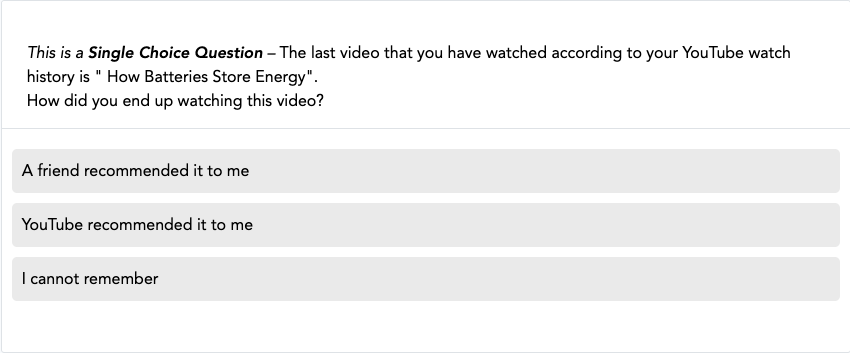
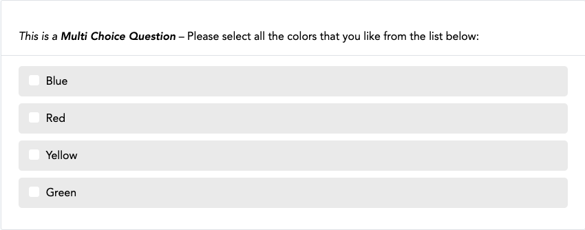
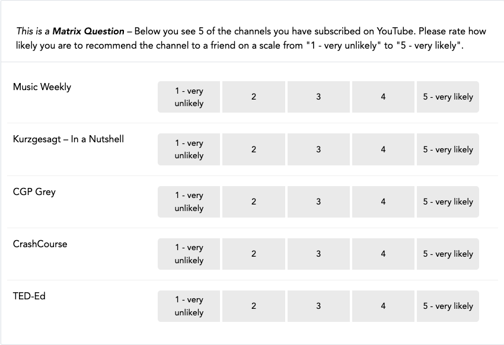
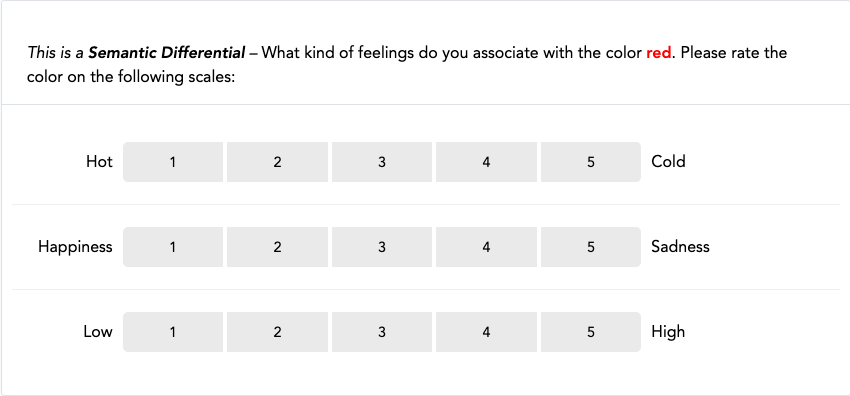
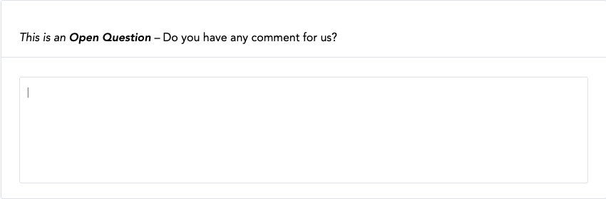
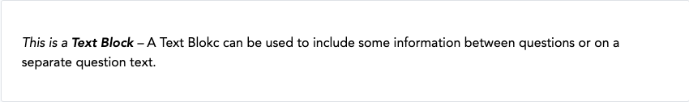

Questionnaire Configuration¶
This page describes the settings for questions and their items, scales, and filters. To configure the questionnaire, open the Project Hub and, under Data Collection Configuration, click Questionnaire.
Question Types¶
-
Single Choice Question: Participants choose one answer.

-
Multi Choice Question: Participants choose one or more answers.

-
Matrix Question: Several items rated on the same scale.

-
Semantic Differential: Several items rated on a scale between two opposite terms.

-
Open Question: Participants answer in their own words.

-
Text Block: Text without a question, for example an introduction to the next page.

General Settings¶
These settings are available for all question types.
Settings
Name
Internal name of the question. Participants don't see it.
Blueprint
Whether the question is shown to everyone or depends on a Blueprint:
- General questions are shown to all participants, whether or not they donated data.
- Questions linked to a Blueprint are shown only to participants for whom that Blueprint extracted data. If no data was extracted, because the extraction failed, wasn't attempted, or the Extraction Rules removed all entries, the question isn't shown.
Questions linked to a Blueprint can refer to the donated data. See Data Integration.
Page
The number of the page the question is shown on.
Index
The order of the questions on the same page. Questions with a lower number are shown first.
Variable Name
The question's column name in the data download. For questions with items, each item
gets its own column, named <variable name>-<item value>. For example, the item with the
value 2 in the question media_use becomes media_use-2.
Text
The question text that participants see.
Requirement level
Whether participants must answer the question:
- Not required: Participants can skip the question.
- Soft: If participants skip the question, they see a reminder once. They can then continue without answering.
- Hard: Participants can't continue without answering.
Randomize items
If enabled, the items of the question are shown in random order. To randomize only some items, use Randomize on the items instead.
Settings for Specific Question Types¶
Open Question¶
Settings
Input type
What participants can enter: text (anything, the default), number (only numbers), or email (only valid email addresses).
Minimum input length
The minimum number of characters. If empty, there's no minimum.
Maximum input length
The maximum number of characters. If empty, there's no maximum.
Minimum input value
Only for the input type number: the smallest number allowed. If empty, there's no minimum.
Maximum input value
Only for the input type number: the largest number allowed. If empty, there's no maximum.
Restrictions are only hints
If participants enter something that doesn't meet the input type or limits, they see a hint, but they can still continue. Your data can therefore contain values outside these limits, so check them when you analyze the data.
Display
Only for the input type text: small (a one-line field, the default) or a larger field with several lines.
Multi item response
If enabled, you can add items, and participants answer each item in its own field. If disabled, the question has one field below the question text.
Matrix Question¶
Settings
Show scale headings
Whether the Heading label of each scale point is shown above the scale.
Question Items¶
Single Choice Questions, Multi Choice Questions, Matrix Questions, and Semantic Differentials consist of items: the answer options or the statements that participants rate.
Settings
Index
The order of the items. Items with a lower number are shown first.
Label
The item's text. For Semantic Differentials, the term on the left side of the scale. Supports basic formatting.
Label Right
Only for Semantic Differentials: the term on the right side of the scale. Supports basic formatting.
Value
Identifies the item in the data download. For Single Choice Questions, the value of the selected item is saved. For the other question types, the value is part of the item's column name (see Variable Name under General Settings).
Randomize
If enabled for some items, only those items swap places randomly. The others stay in the position set by their Index.
Delete
Deletes the item when you click Save.
Scale Configuration¶
For Matrix Questions and Semantic Differentials, participants rate each item on a scale.
Settings
Index
The order of the scale points. Scale points with a lower number are shown first.
Input label
The text in the scale point's button. Supports basic formatting.
Long labels
If labels are long or the scale has many points, mark where a word may break with
­. For example, un­decided is shown as "undecided" if it fits, and
otherwise as "un-" at the end of one line and "decided" on the next.
Heading label
Only for Matrix Questions: the text above the scale point. Supports basic formatting.
Value
The value saved in the data download when a participant selects this scale point.
Secondary point
If enabled, the scale point is shown separately from the main scale, for example for a "Don't know" option.
Delete
Deletes the scale point when you click Save.
Formatting Labels¶
Label, Label Right, Input label, and Heading label support basic HTML formatting:
<b>or<strong>for bold,<i>or<em>for italics, and<u>for underlined text.<sub>and<sup>for subscript and superscript.<br>for a line break.<span class="…">to apply one of the available Bootstrap CSS classes, for example<span class="text-muted">.
DDM removes all other HTML, including style attributes, when you save. You don't get an
error message.
Filter Configuration¶
Filters hide questions or items depending on earlier answers, URL parameters, participant information, or the donation. For example, you can ask a follow-up question only to participants who answered "Yes" to a previous question.
DDM hides the question or item if the filter conditions are met.
Hidden questions and items are coded as -77 in the data download.
If all items of a question are hidden, the question is hidden. If all questions on a page are hidden, participants skip the page.
Settings
Index
The order of the conditions. Conditions with a lower number come first.
Combinator
How a condition combines with the previous one: AND (both must be met) or OR (at least one must be met). The first condition's combinator is ignored.
AND takes precedence over OR. For example, A OR B AND C OR D means
A OR (B AND C) OR D.
Comparison Source
What the condition checks:
- An earlier answer. For Single Choice Questions and Open Questions, the whole question. For Multi Choice Questions, Matrix Questions, Semantic Differentials, and Open Questions with Multi item response, the individual items. Text Blocks can't be used, and a question can't refer to itself.
- A URL parameter, if URL Parameter Extraction is enabled.
- Participant information: participant ID, start time, end time, whether the participant completed the study, and briefing consent (if enabled).
- Donation information: for example, the number of successful or failed donations. See Template Rendering → Available Variables.
Comparison Operator
How the source is compared with the Comparison Value: Equal (==),
Not Equal (!=), Greater than (>), Smaller than (<), Greater than or equal (>=),
Smaller than or equal (<=), Contains, or Does not Contain.
For Open Questions with an input type other than number, only Equal (==),
Not Equal (!=), Contains, and Does not Contain are available.
Comparison Value
The value the source is compared with.
Delete
Deletes the condition when you click Save.